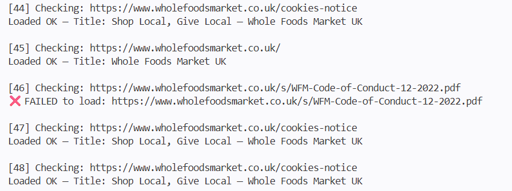

Test Documentation
Test Plans • Test Cases • Bug Reports

Test Plan
A high‑level overview of the testing strategy, scope, objectives, resources, and timelines.
Test plan snippet:
| Section | Summary |
|---|---|
| 1. Test Plan ID | VER 1FY |
| 2. Introduction | Functional testing of a typical e-commerce website |
| 3. Test Items | Homepage, Order Online, Recipes, Find A Store, Work With Us. |
| 4. Features to Be Tested | Functional flows, UI, browser compatibility. |
| 5. Features Not Tested | penetration testing, payment gateway internals |
| 6. Test Objectives | Verify requirements, detect defects, validate end‑to‑end flows. |
| 7. Test Approach | Automated and manual testing |
| 8. Entry Criteria | Approved requirements, stable build, test data ready, environment available. |
| 9. Exit Criteria | All high‑priority tests executed, no critical defects, ≥90% coverage. |
| 10. Deliverables | Test plan, test cases, test data, defect reports, summary report. |
Test Case
Verify if all page links load.
I created a Python-based Selenium script to automatically verify if all page links load.
Results snippet:

Bug Report
Documented defects with severity, priority, reproduction steps, and expected vs actual results.
| Field | Details |
|---|---|
| Bug ID | WFM‑WEB‑0123 |
| Title | Code of Business Conduct PDF |
| Environment |
Device: Desktop Browser: Chrome 124 URL: https://www.wholefoodsmarket.co.uk OS: Windows 11 |
| Description | Code of Business Conduct pdf not linked |
| Steps to Reproduce |
1. Navigate to the https://www.wholefoodsmarket.co.uk/modern-slavery-act 2. Click Code of Business Conduct |
| Expected Result | Linked to Business Code of Conduct pdf |
| Actual Result | linked to wrong pdf document, linked to Supplier Code of Conduct pdf instead |
| Severity | Low |
| Priority | low |